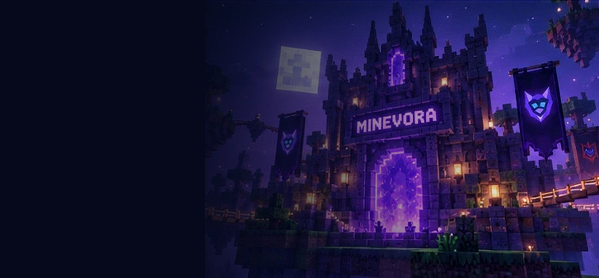

Pobierz i rozpakuj
Pobierz ZIP i użyj opcji „Wyodrębnij wszystko”.
MINEVORA / PORADNIK WINDOWS
Wersja 19.0.0 · Minecraft Java Edition · Windows 11
Pobierz ZIP i użyj opcji „Wyodrębnij wszystko”.
Otwórz START_MINEVORA.bat. Poczekaj na instalację Pythona i bibliotek.
W Graj wybierz wersję Minecraft, loader i zainstaluj profil. Aby uruchomić grę, skonfiguruj logowanie Microsoft.

FAQ
Uruchom DIAGNOSTYKA.bat. Sprawdź, czy Python 3.10+ działa oraz czy pobrano PySide6.
Ustaw poprawny Client ID i Redirect URI własnej zarejestrowanej aplikacji Microsoft. Nie wysyłaj kodów logowania nikomu.
Nie — to archiwum kodu źródłowego. Uruchamiasz je przez pojedynczy plik BAT.